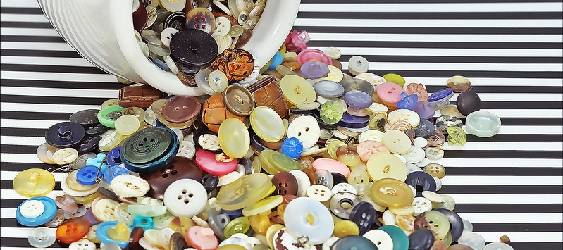

library(midfielddata) # datasets
library(data.table) # data manipulation system
library(dplyr) # data manipulation system
library(tidyr) # drop_na()
data(student, term)
student_base <- data.frame(student)
student_DT <- copy(student)
student_dplyr <- tibble(student)
term_base <- data.frame(term)
term_DT <- copy(term)
term_dplyr <- tibble(term)Aggregating transforms

Using base R, data.table, and dplyr to transform MIDFIELD data as needed for your analysis.
- Introduction
- Data selection
- Basic transforms
- Aggregating transforms ◁ You are here.
- Multi-table transforms
- Reshaping transforms
In this section we demonstrate aggregating many observations of a variable into a set of summary observations, typically grouped by one or more grouping variables. Summaries include counts as well as means, medians, quartiles, etc.
Getting started
Packages and datasets, as shown in the Introduction to data shaping.
Counting
Base R offers several approaches to the task of counting by groups, for example, by(), aggregate(), table(), or a split-apply-combine strategy. For counting, I think table() requires the least amount of cognitive overhead.
With one grouping variable
# base R
freq_table <- table(student_base$race, dnn = "race")
result_base <- as.data.frame(freq_table,
responseName = "N",
stringsAsFactors = FALSE)# data.table
result_DT <- student_DT[, .N, by = c("race")]
setorderv(result_DT, "race")# dplyr
result_dplyr <- student_dplyr %>%
count(race, name = "N")result_DT
#> race N
#> <char> <int>
#> 1: Asian 4193
#> 2: Black 1860
#> 3: International 7354
#> 4: Latine 5386
#> 5: Native American 403
#> 6: Other/Unknown 4509
#> 7: White 73850
all.equal(result_DT, data.table(result_base))
#> [1] TRUE
all.equal(result_DT, data.table(result_dplyr))
#> [1] TRUEComments
base R.
table()creates a contingency table—counts of every combination of the grouping variables—that we convert to a data frame. Column names are assigned using thednnandresponseNamearguments.data.table. The
.Nfunction is an integer containing the number of rows in each group, with grouping variables assigned using thebyargument.setorderv()is optional, matching the data.table row order with the other two systems.dplyr.
count()counts the number of unique values in a group. The response column name is assigned using thenameargument (default is lower casen).
With two or more grouping variables
Data.table and dplyr count the frequency of each grouping-variable combination present in the data; base R counts the frequencies of all combinations, inserting counts of zero as needed.
grouping_variables <- c("institution", "sex", "transfer")# base R
freq_table <- table(student_base$institution,
student_base$sex,
student_base$transfer,
dnn = grouping_variables)
result_base <- as.data.frame(freq_table,
responseName = "N",
stringsAsFactors = FALSE)
result_base <- result_base[result_base$N > 0, , drop = FALSE]# data.table
result_DT <- student_DT[, .N, by = grouping_variables]
setorderv(result_DT, c("institution", "N"), order = c(1, -1))# dplyr
result_dplyr <- student_dplyr %>%
count(institution, sex, transfer, name = "N") %>%
arrange(institution, desc(N))result_DT
#> institution sex transfer N
#> <char> <char> <char> <int>
#> 1: Institution B Male First-Time in College 16998
#> 2: Institution B Female First-Time in College 15689
#> 3: Institution B Male First-Time Transfer 6946
#> 4: Institution B Female First-Time Transfer 6026
#> 5: Institution B Unknown First-Time in College 1
#> 6: Institution C Female First-Time in College 9991
#> 7: Institution C Male First-Time in College 8779
#> 8: Institution C Female First-Time Transfer 3978
#> 9: Institution C Male First-Time Transfer 3964
#> 10: Institution J Male First-Time in College 12051
#> 11: Institution J Female First-Time in College 9180
#> 12: Institution J Male First-Time Transfer 2413
#> 13: Institution J Female First-Time Transfer 1539
all.equal(result_DT, data.table(result_base), ignore.row.order = TRUE)
#> [1] TRUE
all.equal(result_DT, data.table(result_dplyr))
#> [1] TRUEComments
base R. Similar to the previous case with more grouping variables plus dropping rows with a count of zero to match the other systems’ outputs.
data.table. Similar to the previous case with more grouping variables plus ordering rows by ascending institution (
order = 1) and descending N (order = -1).dplyr. Similar to the previous case with more grouping variables plus arranging rows with ascending institution (default) and descending N using
desc().
Summarizing
Statistical summaries are commonly encountered to help describe trends in data, e.g., mean, median, standard deviation, minima, maxima, etc.
Of the several summarizing options available in base R, by() seems the simplest to provide here. It generalizes easily to multiple and different summaries and the only cognitive overhead is the need to know about do.call(), rbind(), and anonymous functions.
With one grouping variable
Task. determine the 10% quantile, median, and 90% quantile of term GPA by academic standing (good standing, academic warning, etc.) plus the number of observations used in the summary. In all systems, we use the base R quanitile() function to determine the 10% and 90% quantiles.
# base R
DF <- term_base[!is.na(term_base$gpa_term), , drop = FALSE]
DF_by <- by(DF, list(DF$standing), function(df) {
data.frame(standing = unique(df$standing),
N = nrow(df),
quant_10 = quantile(df$gpa_term, 0.10),
median_gpa = median(df$gpa_term),
quant_90 = quantile(df$gpa_term, 0.90))
})
result_base <- do.call(rbind, DF_by)
rownames(result_base) <- NULL# data.table
DT <- na.omit(term_DT, "gpa_term")
result_DT <- DT[, .(.N,
quant_10 = quantile(gpa_term, 0.10),
median_gpa = median(gpa_term),
quant_90 = quantile(gpa_term, 0.90)),
by = c("standing")]
setorder(result_DT, -median_gpa)# dplyr
result_dplyr <- term_dplyr %>%
drop_na(gpa_term) %>%
group_by(standing) %>%
summarise(N = n(),
quant_10 = quantile(gpa_term, 0.10),
median_gpa = median(gpa_term),
quant_90 = quantile(gpa_term, 0.90)) %>%
arrange(-median_gpa)result_DT
#> standing N quant_10 median_gpa quant_90
#> <char> <int> <num> <num> <num>
#> 1: Good Standing 589883 2.33 3.14 3.90
#> 2: Academic Probation 18489 1.27 1.79 2.30
#> 3: Academic Warning 25961 1.14 1.72 1.93
#> 4: Academic Dismissal 2208 1.00 1.53 1.89
all.equal(result_DT, data.table(result_base), ignore.row.order = TRUE)
#> [1] TRUE
all.equal(result_DT, data.table(result_dplyr))
#> [1] TRUEComments
base R.
by()is an implementation ofsplit() + lapply()(the first two parts of the well-known split-apply-combine method) that yields a list of data frames, one per each combination the grouping variables.rbind()combines those results into a single data frame.function(df)is an anonymous function, that is, a function used without assigning it a name in the workspace.data.table.
dplyr.
With two or more grouping variables
# base R
DF <- term_base[!is.na(term_base$gpa_term), , drop = FALSE]
DF_by <- by(DF, list(DF$standing, DF$level), FUN = function(df) {
data.frame(standing = unique(df$standing),
level = unique(df$level),
N = nrow(df),
quant_10 = quantile(df$gpa_term, 0.10),
median_gpa = median(df$gpa_term),
quant_90 = quantile(df$gpa_term, 0.90))
})
result_base <- do.call(rbind, DF_by)
rownames(result_base) <- NULL# data.table
DT <- na.omit(term_DT, "gpa_term")
result_DT <- DT[, .(.N,
quant_10 = quantile(gpa_term, 0.10),
median_gpa = median(gpa_term),
quant_90 = quantile(gpa_term, 0.90)),
by = c("standing", "level")]
setorder(result_DT, -median_gpa, -quant_90)# dplyr
result_dplyr <- term_dplyr %>%
drop_na(gpa_term) %>%
group_by(standing, level) %>%
summarise(N = n(),
quant_10 = quantile(gpa_term, 0.10),
median_gpa = median(gpa_term),
quant_90 = quantile(gpa_term, 0.90)) %>%
arrange(-median_gpa, -quant_90)result_DT
#> standing level N quant_10 median_gpa quant_90
#> <char> <char> <int> <num> <num> <num>
#> 1: Good Standing 05 Fifth-year Plus 38498 2.500 3.35 4.000
#> 2: Good Standing 04 Fourth-year 105146 2.440 3.28 3.940
#> 3: Good Standing 03 Third-year 140593 2.380 3.18 3.910
#> 4: Good Standing 02 Second-year 161786 2.310 3.08 3.850
#> 5: Good Standing 01 First-year 143860 2.250 3.00 3.820
#> 6: Academic Probation 03 Third-year 1030 1.309 2.00 2.670
#> 7: Academic Probation 04 Fourth-year 226 1.370 1.98 2.870
#> 8: Academic Probation 02 Second-year 4318 1.300 1.90 2.560
#> 9: Academic Probation 05 Fifth-year Plus 37 1.442 1.80 3.000
#> 10: Academic Probation 01 First-year 12878 1.250 1.75 2.080
#> 11: Academic Warning 01 First-year 3931 1.260 1.75 1.940
#> 12: Academic Warning 02 Second-year 9911 1.200 1.74 1.940
#> 13: Academic Warning 03 Third-year 6831 1.030 1.70 1.930
#> 14: Academic Warning 04 Fourth-year 4078 1.000 1.70 1.930
#> 15: Academic Warning 05 Fifth-year Plus 1210 1.000 1.70 1.920
#> 16: Academic Dismissal 01 First-year 1671 1.000 1.54 1.900
#> 17: Academic Dismissal 03 Third-year 75 1.000 1.53 1.866
#> 18: Academic Dismissal 02 Second-year 440 1.000 1.50 1.860
#> 19: Academic Dismissal 04 Fourth-year 20 0.700 1.42 1.692
#> 20: Academic Dismissal 05 Fifth-year Plus 2 1.062 1.31 1.558
#> standing level N quant_10 median_gpa quant_90
all.equal(result_DT, data.table(result_base), ignore.row.order = TRUE)
#> [1] TRUE
all.equal(result_DT, data.table(result_dplyr))
#> [1] TRUEComments
base R. Add the second grouping variable
levelin two places.data.table. Add a second grouping variable to the
byargument. Order by descending median GPA with the 90% quantile used to break ties.dplyr. Add a second grouping variable to
group_by().